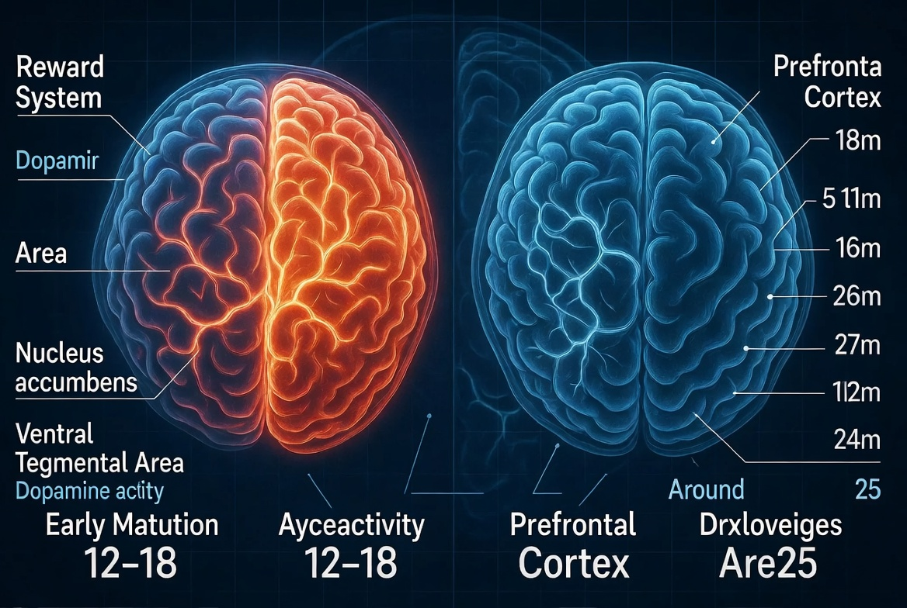
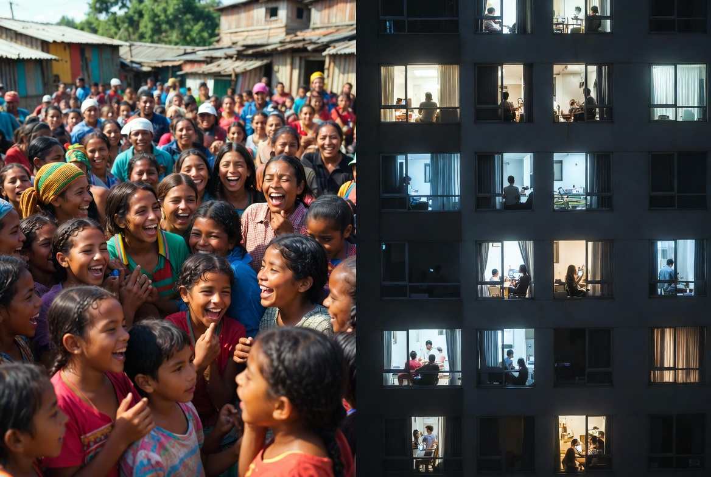

The Swarm
Analysis | Echo Truth Hub | February 2026 | ~10 min read
By Mímir Mímisbrunnr
```In Part I, we established the baseline: a savannah brain built for 150 people, dropped into a machine offering millions. This part follows the evidence of what that machine does once it has your attention, and what its architects knew while they were building it.
The Counterfeit Tribe

What social media built, deliberately, architecturally, with full knowledge of the neurochemistry involved, is what might fairly be called the counterfeit tribe: a digitally simulated experience of belonging that delivers just enough reward to sustain engagement, while systematically failing to provide what the human organism actually requires.
In-person social contact releases a complex cocktail of oxytocin, serotonin, dopamine, and endorphins. Real eye contact alone triggers measurable oxytocin release. The physical proximity of a trusted person activates the parasympathetic nervous system, reducing cortisol, calming the threat response, signalling safety in ways that screen contact demonstrably cannot replicate. These are not metaphors for connection. They are connection, the full-bandwidth biological version, refined over millions of years.
Social media delivers a partial signal. The dopamine hit of a like. The recognition of a reply. The simulated tribal affirmation of a share. Without the oxytocin. Without the eye contact. Without the physical presence that tells your nervous system, at the deepest level, I am not alone.
It is, in other words, a meal that looks exactly like food but provides no nutrition. You feel temporarily satisfied. Then you come back, hungrier than before. Then you scroll again. This is not a bug. It is the product.
There is a second mechanism layered on top of this, arguably more insidious: herd mentality. The tendency to mimic the actions of a larger group, often overriding personal judgment, because we assume at a deep evolutionary level that the crowd must be right. In a genuine tribe of 150, the crowd usually was right. If everyone in your band was running, you ran. Stopping to evaluate the evidence was a predator's opportunity.
The algorithm weaponises this ancient heuristic with surgical precision. The trending tab is not a neutral reflection of what people are watching. It is engineered social proof, a manufactured crowd signal designed to trigger herd behaviour at scale. Studies find that 63% of streaming decisions are influenced by what others appear to be watching. The queue is long, so the show must be good. The post has 2.3 million likes, so it must be true. The bandwagon effect, where popularity alone substitutes for validity, is not a glitch in human social wiring. It is a feature. One that evolved for a world of 150 people, now running in a world of 8 billion algorithmically connected ones, being actively exploited by a machine with no interest in whether the judgment is correct.
The people caught in this loop are not stupid. They are running ancient, well-calibrated social software in an environment it was never designed for. Which is precisely the problem.
Sean Parker, Facebook's founding president, admitted as much publicly in 2017. The platforms were designed from the outset to give users dopamine hits through social-validation feedback loops. His words: they deliberately exploited "a vulnerability in human psychology." The architects knew. They built it anyway. And then they sent their own children to schools with no phones.
Fast forward to February 18, 2026. Mark Zuckerberg testified under oath before a jury in Los Angeles Superior Court, the first time in history he has faced a jury, and maintained that the existing body of scientific work has not proved that social media causes mental health harms. Plaintiff attorney Mark Lanier responded by pointing out that people who are addicted to something also tend to increase the amount they use it, directly paralleling Zuckerberg's own defence that people use things more when they provide value. Zuckerberg said he didn't know how to respond to the statement and didn't know whether it applied to this situation. The man who built the machine, in a courtroom, under oath, could not distinguish between his product's value proposition and an addiction. Internal documents introduced at the same trial told a different story: a 2020 Meta document showed that 11-year-olds were four times as likely to keep returning to its apps as older users; a 2017 internal email noted that Zuckerberg's top priority for the year was "teens"; a strategy document explicitly stated "if we want to win big with teens, we must bring them in as tweens"; and 4 million children under the age of 13 were documented using the platform in the US alone. Instagram CEO Adam Mosseri testified the week prior that he does not believe social media can be clinically addictive, while also stating that spending 16 hours a day on Instagram is "problematic." Legal experts have described the case, a bellwether for 1,600 pending lawsuits from families and school districts, as the social media industry's Big Tobacco moment. The architects still know. They are still building it anyway.
MIT psychologist Sherry Turkle has spent her career documenting what this does to us. In Alone Together and subsequent work, she describes a generation increasingly losing the capacity for deep, patient, vulnerable, face-to-face conversation, the kind where you can't edit your response, can't disappear mid-sentence, can't perform a curated version of yourself. Real conversation requires tolerance of pauses, ambiguity, and the occasional awkward silence that turns out to be where intimacy lives. Screens let us manage, edit, and retreat. We are training ourselves out of the discomfort that genuine connection requires, and calling it progress.
150 People, 10,000 Followers, and the Mathematics of Loneliness
Picture someone you know who has 4,000 Instagram followers. Ask them how many of those people they would call if something went badly wrong tonight. The number they give you is their actual tribe. The gap between that number and 4,000 is the product the platform sold them.
Social media's core offer is scale. More connections. More reach. More relationships. The implicit promise is that more is better, that expanding your network to thousands or millions of people is an upgrade on the cognitive limit of 150. It is, in fact, the opposite.
Flooding your social environment beyond the Dunbar ceiling doesn't enhance your tribal experience. It degrades it. Your brain cannot track 10,000 people meaningfully. What it does instead, under constant pressure from a feed algorithmically optimised to maximise surface-level engagement, is spread its social processing capacity thin across thousands of shallow signals, while the genuine 5, the 15, the 50 go underserved. The people who actually matter get less of you because the machine is demanding your attention for strangers.
Meta-analyses consistently link problematic social media use to higher loneliness, with correlation coefficients ranging from r ~0.21 to 0.41 in student populations. Hunt et al.'s 2018 randomised controlled trial found that limiting social media to 30 minutes per day reduced both loneliness and depression significantly within three weeks. Not months. Three weeks.
We can have more "connections" than any human being in history while being measurably lonelier than our grandparents, who knew their 150, knew them well, and met them in person regularly. The tribe was never supposed to be infinite. The algorithm made it infinite, and charged you your attention, your sleep, your mental health, and your capacity for real intimacy as the price of admission.
The Great Rewiring, and Who Paid the Price
Psychologist Jonathan Haidt, in The Anxious Generation (2024), documents a sharp inflection point around 2012–2013, when smartphone adoption in teenagers crossed a critical threshold and coincided with a near-simultaneous rise in adolescent anxiety, depression, and self-harm rates across multiple countries. Not one country. Not one demographic. A global signal, consistent across the US, UK, Canada, Australia, and beyond, affecting girls most acutely, corresponding precisely to the transition from phone-supplemented to phone-first social life.
The mechanism Haidt identifies is displacement. Smartphones didn't add a new activity to teenagers' lives. They crowded out what was already there: unstructured in-person play, boredom with nowhere to go, the slow accumulation of face-to-face social risk that builds confidence, empathy, and resilience. Jean Twenge's longitudinal data tells the same story: pre-2010, mental health indicators for adolescents were stable. Post-2010, they are not.
Physical interaction is not simply one option among many for meeting social needs. It is the primary channel through which humans develop the social competencies that allow them to function in real relationships, reading nonverbal cues, tolerating ambiguity, managing the anxiety of genuine vulnerability. When screen time crowds out face time, those skills don't plateau. They atrophy. And they atrophy precisely in the developmental windows when they were supposed to be built.
The Unfinished Brain: A Feature, Not a Bug

Here is the biological fact that the platforms understood and the public largely did not: the prefrontal cortex, the brain's seat of impulse control, long-term planning, risk assessment, and self-regulation, does not fully mature until approximately age 25 in males, and 22 to 24 in females. It is the last brain region to complete development.
The adolescent brain does not develop as a single unified system on a single timeline. It develops in two distinct phases, and understanding the sequence is the key to understanding why targeting children and teenagers with an engagement-maximisation engine is not a grey area. It is a biological ambush.
In early adolescence, the brain undergoes rapid synaptogenesis: a surge in new neural connections, followed by aggressive pruning. More connections are formed than will ever be kept. The ones reinforced by experience survive. The ones unused are cut. Whatever a young person repeatedly does, thinks, feels, and seeks during this window is literally being built into the architecture of their brain. The reward system, centred on the nucleus accumbens and the ventral tegmental area (VTA), matures early and peaks in this phase. It is hypersensitive. It releases more dopamine in response to rewards than the adult brain does. It treats social validation, novelty, and pleasurable stimulation as high-priority signals, and it escalates motivation accordingly.
In late adolescence and early adulthood, the brain shifts to a different kind of work: myelination, the process by which neural pathways are insulated to make them faster and more reliable, and the strengthening of long-range circuits connecting the prefrontal cortex to the rest of the brain. This is the phase of refinement rather than expansion. And this is the phase the prefrontal cortex depends on to complete its development, typically finishing around 22 to 24 in females and 25 in males.
The result of this staggered timeline is what a 2012 Ghent University medical thesis on the neuroscience of the reward system, supervised by Professor C. Van Heeringen, describes precisely: a temporary but structurally significant imbalance. The emotional and reward systems are hyperactive under hormonal influence, while the rational prefrontal regions are not yet strong enough to provide adequate counterbalance. The accelerator is fully installed and running hot. The brakes are still being manufactured.
The neuroplasticity that makes the adolescent brain so capable of learning is, in this context, a double-edged feature. Early exposure to highly stimulating reward signals can alter the developmental trajectory of dopamine receptors and the prefrontal-limbic connections that are supposed to regulate them. The Ghent thesis documents this explicitly: early conditioning of the reward system during this window can lead to permanent changes in motivation, self-control, and addiction liability later in life.
The platforms did not stumble into this demographic. A 2020 internal Meta slideshow titled "Teen Fundamentals" contained a slide explicitly stating: "The teenage brain is usually about 80% mature. The remaining 20% rests in the frontal cortex. At this time, teens are highly dependent on their temporal lobe, where emotions, memory, learning, and the reward system reign supreme." The following slide added that teens are driven by emotion and "the intrigue of novelty and reward." And then, several slides later, the same document listed as a commercial opportunity: "teens need rapid fire discovery features," captioned with the observation that teens have an "insatiable appetite for novelty."
Meta's own internal team diagrammed the neurological incompleteness of the adolescent brain, identified its hypersensitivity to novelty and reward as a product design opportunity, and then engineered features specifically calibrated to that vulnerability. This is not a company that failed to do its homework. This is a company that did its homework, understood exactly what it was looking at, and called it a market.
A separate internal Meta study concluded: "Teens are hooked despite how it makes them feel. Instagram is addictive, and time spent on the platform is having a negative impact on mental health." One Meta employee asked internally: "If the results are bad and we don't publish and they leak, is it going to look like tobacco companies doing research and knowing cigarettes were bad and then keeping that info to themselves?" The answer, as it turned out, was yes.
The Male Perspective: When the Hunt Gets Replaced by the Scroll
Watch a group of young children playing without supervision for twenty minutes. The girls will often be together, talking, organising, negotiating social dynamics, maintaining the relational fabric of the group. The boys will typically be elsewhere, doing something physical and at least moderately dangerous, testing each other through rough-and-tumble play, establishing hierarchies through action. This is not a cultural accident. It is ancient, cross-cultural, and thoroughly documented.
Research involving 112,000 participants confirmed that boys and men are far more likely than girls and women to engage in physical competition and sports spontaneously, outside organised, institutional settings. The sex difference is not primarily socialised. It is wired. University of California Davis research identified testosterone as the key driver of gender-based differences in social stress responses: testosterone during puberty dampens the amygdala's threat response, making males less sensitive to social pressure and more oriented toward physical approach, challenge, and competition.
In plain terms: testosterone makes men less susceptible to social approval loops. Which should, theoretically, make men more resistant to the social media trap. And in some ways it does. Men are less likely to develop the acute social comparison anxiety that visual platforms inflict on girls. They are, in general, more easily bored by passive social performance.
The problem is that the platforms found the back door anyway. Gaming. Status hierarchies among creators. Competition metrics. The male tendency toward mission-oriented obsession, channelled into algorithmic rabbit holes. And critically, the simple fact of displacement. Every hour a young man spends passively in the digital world is an hour not spent doing the physical, risk-taking, achievement-oriented things through which masculine competence, confidence, and genuine peer trust are built.
Male bonding is not built primarily through conversation. It is built through shared physical experience, the trust forged by training together, building something together, surviving something together. The kind of trust that doesn't need to be articulated because it was earned. Social media offers none of that. It offers performance without stakes. Status without achievement. Tribe without the shared hunt.
Social media rewards performance of identity over demonstration of capacity. The result is a generation of young men whose physical and competitive energies have no healthy outlet, more isolated than any previous male generation, being offered as a substitute for genuine masculine social life the simulacrum of connection on a 6-inch screen. That is not an upgrade. It is a slow hollowing out, performed with consent, in exchange for free content.
That is the male side of the equation. But an argument about human social architecture that only covers half of humanity is not an argument, it is a blind spot. The other half of the story is not simply a mirror image. It is a different wound, delivered by the same weapon, to a different and in some ways more vulnerable part of the human social system. And it deserves the same attention.
The Female Perspective: The Mirror That Never Tells the Truth
Go back to that same group of unsupervised children. The girls are together, and they are talking. Not performing. Not competing for a leaderboard. Talking, maintaining the invisible relational fabric that holds the group together, reading each other's emotional states, negotiating belonging through language, empathy, and shared disclosure. This is not a softer version of what the boys are doing. It is a different and equally ancient social architecture, built for a different set of evolutionary pressures, and no less sophisticated for being quieter.
Female social bonding is built primarily through verbal intimacy, emotional attunement, and mutual vulnerability. Trust between women is established through what is shared, how it is received, and whether the other person can be relied upon to hold it carefully. The relational network is dense, emotionally high-resolution, and deeply sensitive to signals of acceptance and exclusion. In the context of a tribe of 150, this was extraordinary social technology. In the context of Instagram, it becomes the precise mechanism of harm.
Visual social comparison is not equally distributed across sexes. It lands hardest on adolescent girls, and the research on this is not subtle. Haidt's data shows that the sharpest mental health deterioration in the post-2012 period is concentrated in girls aged 10 to 14, precisely the window of peak identity formation and peak reward system hypersensitivity. The Nguyen et al. meta-analysis of 98,000 participants found that the negative correlation between heavy short-form video use and psychological wellbeing was significantly stronger in female participants.
The counterfeit tribe problem is not gender-neutral in how it operates. The partial signal that social media delivers, dopamine without oxytocin, recognition without physical presence, affirmation without the nervous-system safety of genuine proximity, maps directly onto the components that female social bonding most depends on. A like is not the same as a friend holding your gaze and saying I hear you. A comment is not the same as physical presence in a moment of vulnerability.
Instagram's internal research, leaked in 2021 and confirmed in subsequent legal proceedings, showed that the platform's own data found it worsened body image in one in three teenage girls. The algorithm did not stumble into this. It optimised toward engagement, and engagement, for adolescent girls on visual platforms, is highest around content that triggers social comparison around appearance. The machine found the lever. It pulled it. Repeatedly. On children.
The female social architecture that is being damaged here is not a vulnerability. It is the thing that held communities together for hundreds of thousands of years. The capacity for deep verbal intimacy, emotional reading, and relational maintenance is an extraordinary human capability being systematically degraded by a system that profits from the degradation.
The Mirror in the Forest: What Our Closest Relatives Tell Us
Chimpanzees and bonobos share approximately 98–99% of our DNA. The evolutionary split between their lineage and ours occurred around eight million years ago. They are not metaphors for human nature. They are the closest empirical window we have into it.
Chimpanzees rely on aggression to solve problems. Their social structure is male-dominated and hierarchical, with rank established through competition, coalition-building, and controlled violence. The male alliances are political, tactical, and ruthless, which is why de Waal's Chimpanzee Politics (1982) was required reading for the US Congress. Sound familiar?
Bonobos are something else entirely. Female-dominated, peaceful, and exceptionally enthusiastic about physical contact as a social tool. De Waal called them "the hippies of the primate world." Where chimps meet rival groups with aggression, bonobos meet them with grooming, play, and physical affection.
De Waal's central argument: humans contain both. Both repertoires are in us. Both are activated or suppressed by our social environments.
The platforms structurally reward chimpanzee behaviours in their most amplified form: status competition, coalition formation against out-groups, dominance signalling, and tribal aggression, stripped of every biological mechanism that normally keeps these behaviours in check. Meanwhile, the bonobo repertoire is systematically eliminated. Touch. Physical presence. Shared laughter in the same room. You cannot groom someone through a screen. You cannot resolve genuine tension with a fire emoji.
What we are left with is the worst of both species and the best of neither: the chimpanzee's aggression without its physical accountability, the bonobo's need for connection without its biological fulfilment.
De Waal put it plainly before his death: "Socially and emotionally we are basically the same as the other primates." The technology has changed. The underlying animal has not.
A Map, Not the Territory: The Western Lens

Before going further, something needs to be said plainly: this is a Western map.
Consider rural South America, where multi-generational households still gather daily, where the extended family is not a holiday arrangement but a living architecture, where communal social structures have not yet been displaced by the smartphone to the same degree they have in Northern Europe or urban North America. The Dunbar number holds there too. But the consequences of heavy platform use are relative: most acute where the technology has most thoroughly replaced what existed before.
The research cited in this piece was conducted primarily in North America, Western Europe, China, and Australia. The data bias toward those populations is itself worth naming: the studies that make headlines are conducted where the funding is, which is where the harm is most visible, which is where the screens arrived earliest and most thoroughly. That is a feedback loop worth being suspicious of.
The dumbphone revival is almost exclusively a wealthy Western phenomenon. Which itself tells you something: opting out is a luxury. In a township in Johannesburg or a rural village in Indonesia, the smartphone may be the primary tool of economic participation. Removing it is not an option. Managing it is the only play.
The honest framing: this piece describes the sharp end of a spectrum. The technology moves faster than any culture's ability to absorb it safely. And it moves toward everyone, regardless of whether they were ready. Part III takes up what can actually be done about that.
Sources & Further Reading — Part II
The Trial & Internal Meta Documents
- Middendorp S. "Meta's Internal Research Shows Its Platforms Are Addictive and Harmful, Still It Targets Teens." The HighWire.
- Sippel B, Greb N, Park E, Rausch Z, Haidt J. NYU Stern Tech and Society Lab. jonathanhaidt.com
- Zuckerberg testimony, LA Superior Court, 18 Feb 2026. NPR: npr.org
- Internal Meta documents. CNBC: cnbc.com
- Mosseri testimony. CNN: cnn.com
Adolescent Brain Development
- Beirnaert A. (2012). Het Beloningssysteem in de Hersenen. Ghent University. Promotor: Prof. Dr. C. Van Heeringen.
- Steinberg L et al. (2008). Age differences in sensation seeking. Developmental Psychology, 44(6).
- Galvan A et al. (2006). Earlier development of accumbens relative to OFC. Journal of Neuroscience, 26(25).
Social Displacement & Mental Health
- Haidt J (2024). The Anxious Generation. jonathanhaidt.com
- Turkle S (2011). Alone Together. ted.com
- Hunt M et al. (2018). No More FOMO. Journal of Social and Clinical Psychology.
- Nguyen et al. (2025). Psychological Bulletin (APA). psycnet.apa.org
Female Perspective
- Jensen F (2015). The Teenage Brain. HarperCollins.
- Instagram internal research leak (2021). WSJ: wsj.com
- Twenge JM (2017). iGen. Atria Books.
Sex Differences & Male Social Behaviour
- Deaner RO, Geary DC et al. (2012). PLoS ONE. PMC3498324
- UC Davis / Trainor Lab (2023). PNAS. ucdavis.edu
Primate Social Structures
- de Waal FBM (1982). Chimpanzee Politics. Johns Hopkins UP.
- de Waal FBM (2005). Our Inner Ape. Riverhead Books.
- de Waal FBM (1995). "Bonobo Sex and Society." Scientific American. scientificamerican.com
Herd Mentality
- Bandwagon effect (Forbes): forbes.com
- Binge-watching & social proof (63%): moldstud.com